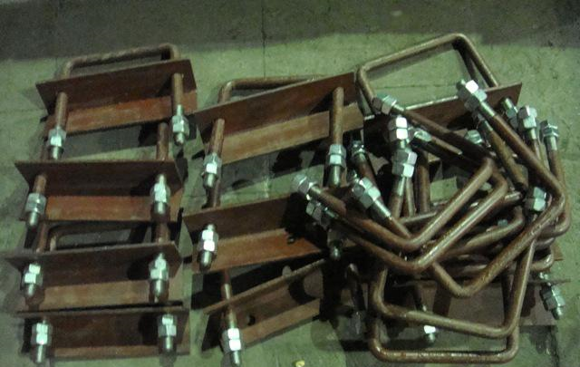
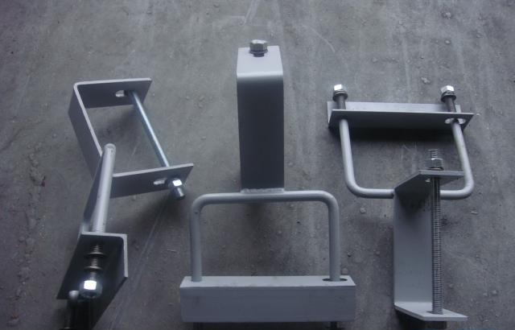
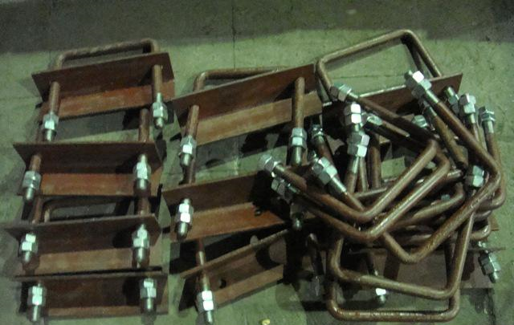
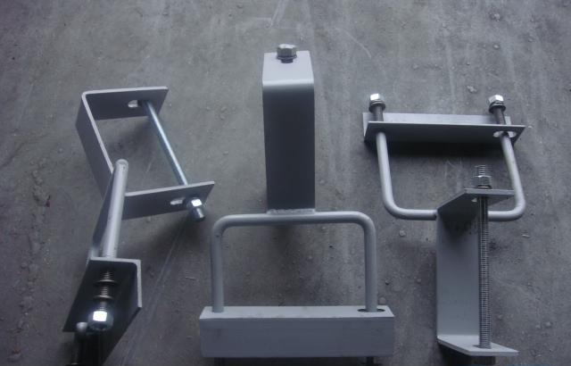

Изготовление траверс
Данное предприятие осуществляет производство траверсов и крепления к ним. их предназначением является высоковольтные линии, напряжение которых составляет 10 кв или низковольтные линии, напряжение которых составляет 0,4 кв. Они являются металлической конструкцией, находящийся на воздушных опорах линий гибких воздуховодов, электропередач а также разных коммуникационных шин. Располагаются они на опорах воздушных линий электропередач, котором специалисты крепят изоляторы, которые необходимы для проводов.
Изготовление траверс
Предприятие производит траверсы и крепления к ним для высоковольтных линий напряжением 10кВ и низковольтных линий напряжением 0,4кВ.
Траверсы представляют собой металлическую конструкцию, которая находится на воздушных опорах линий гибких воздуховодов, линий электропередач, различных коммуникационных шин, и прочее. Траверсы предназначаются для поддержки проводов и необходимости возникновения изолирующего воздушного расстояния. Расположены траверсы на опорах воздушных линиях электропередач, к которым крепятся изоляторы для проводов и прочая арматура. Существуют также низковольные траверсы типа ТН001, ТН1, ТН2, ТН3, ТН4, ТН8, ТН9, ТН10, ТН12, ТН18, ТН19, ТН28, ТН29 используются на воздушных линиях электропередач с напряжением 0,4 кВ. Траверсы типа ТМ считаются высоковольтными и используются на линиях 6-10 кВ. Низковольтные траверсы ТН производят на заводах занимающихся изготовлением металлоконструкций ЛЭП, а также на предприятиях, где в технологических процессах производства применяется углеродистая сталь. Они состоят из уголка и приваренных нему штырей. Процессу сварки штырей, уделяется особое внимание.Существуют высоковольтные траверсы. Линии электропередачи считаются высоковольтными, если напряжение между одним из проводов и землёй больше 250 В. Высоковольтные линии электропередач (ЛЭП), служащие для передачи энергии на большие расстояния, имеют U= 35 - 750 кВ переменного тока f = 50 Гц или 800 - 1000 кВ постоянного тока. Распределительные ЛЭП электрических сетей строятся только переменного тока и чаще всего с U= 6 кВ или 10 кВ. ЛЭП могут быть воздушными и кабельными.
Преимущественное распространение получили воздушные линии. На одной ЛЭП могут быть подвешены одно-, двух- или трехфазные цепи. Подключаются ЛЭП к линейным обмоткам трансформаторов. Электрический ток передается на расстояние по проводам, закрепленным на траверсах для ЛЭП, установленным на железобетонных опорах. В зависимости от назначения и типа опор траверсы различают по длине и количеству отверстий. Траверсы, устанавливаемые на переходных опорах для пролетов более 100 м, изготовляют усиленного сечения. Для предохранения от перекоса траверсы укрепляют на опорах металлическими подкосами. Наиболее популярными в серии ТМ являются несколько основных типов траверс для высоковольтных линий электропередач.
Среди них можно отметить основные виды:
- Траверсы с одинарным закрепление проводов.
- Траверсы с двойным креплением проводов.
- Траверсы для закрепления провода при помощи натяжных изолирующих подвесок при установке опор ЛЭП анкерного типа.
 


